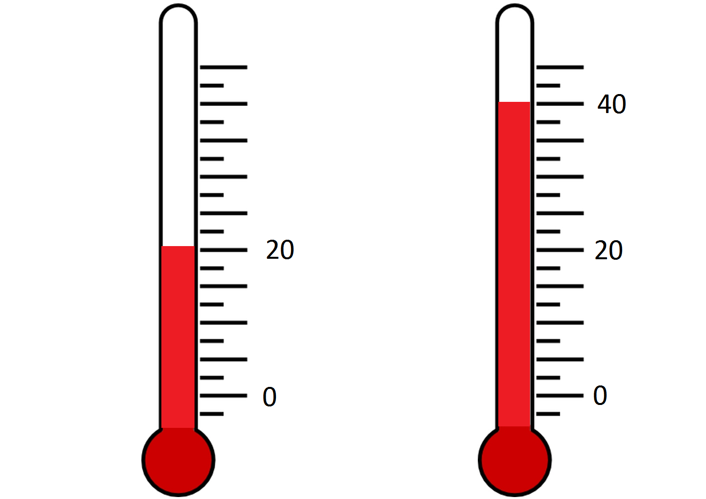
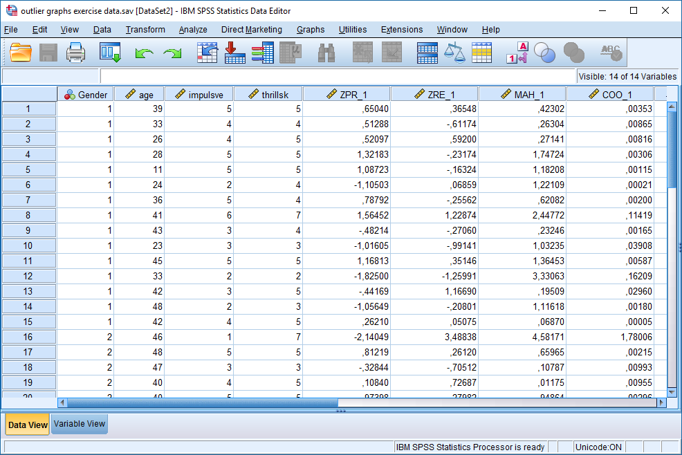
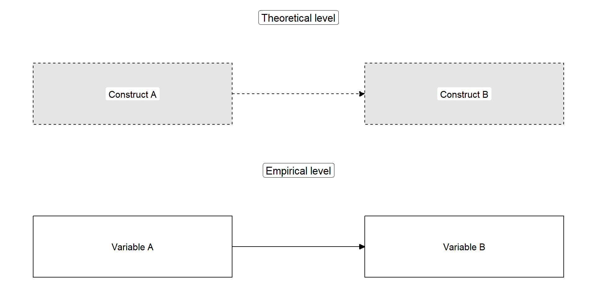
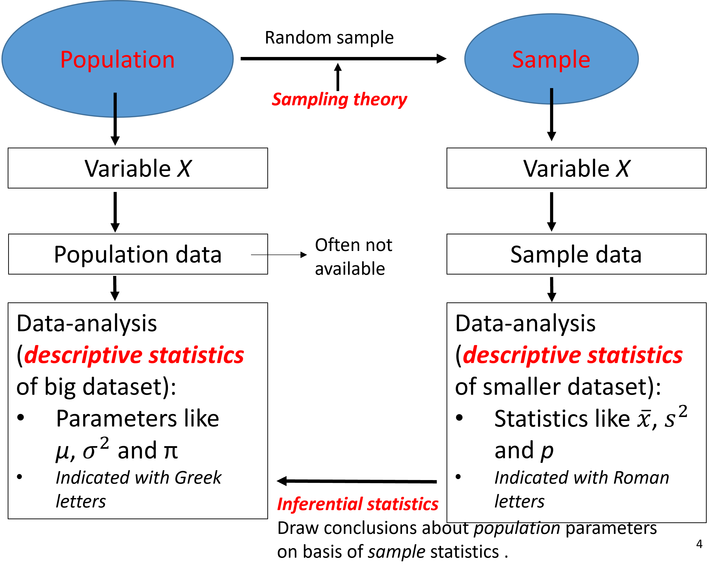
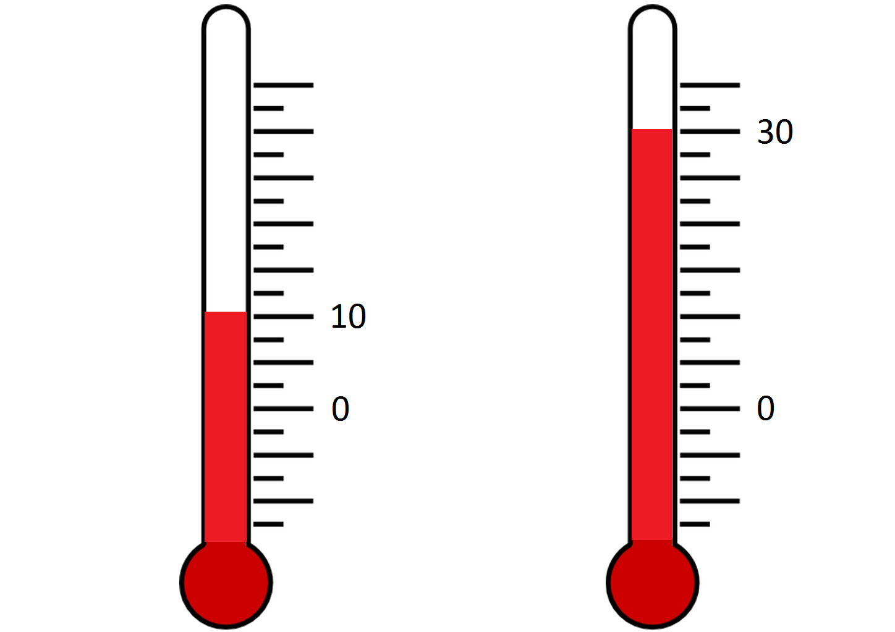
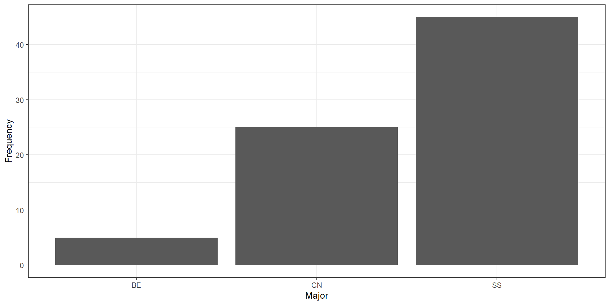
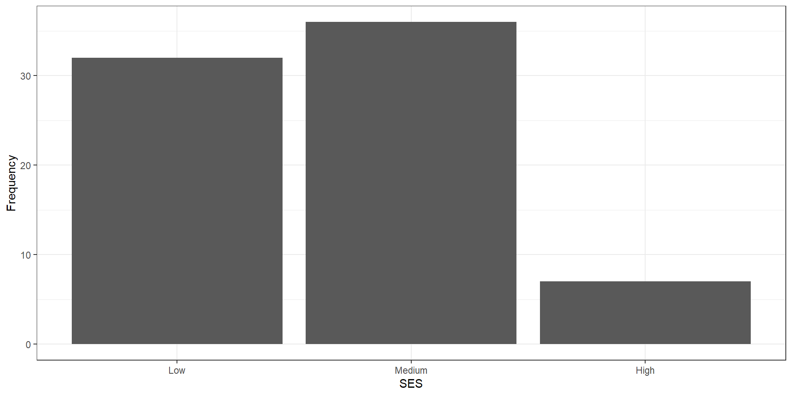
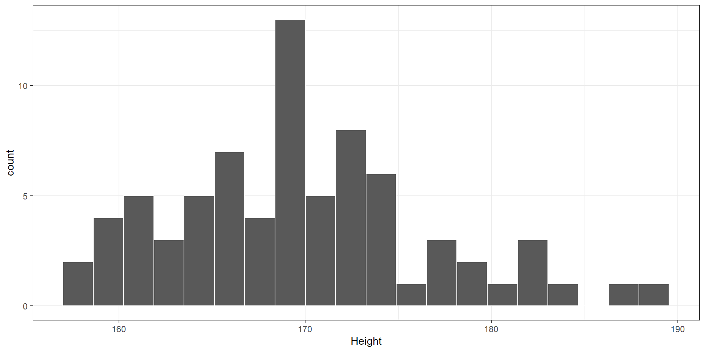
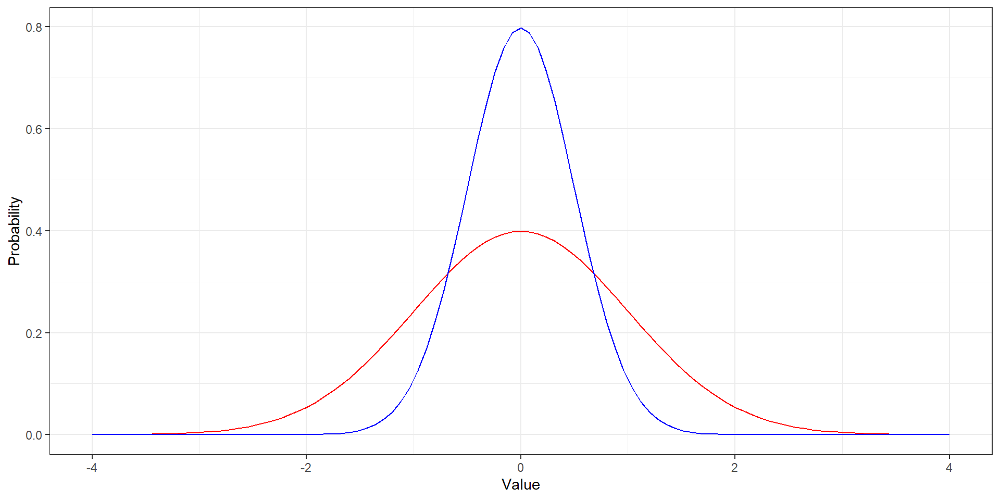

Lecture 1 - Introduction to Statistics
Caspar J. van Lissa
2023-08-13
Introduction
Why statistics?
You grew up in the “digital age”. There is data about your entire life…
And everybody wants your data
What can you do with data?
- Data literacy is increasingly important in many jobs
- You can get insights from data to
- Better understand social life
- Predict sales and optimize marketing
- Explore what activity in the brain is associated with observed behavior
- Data analysis is one of the most marketable concrete skills we teach at university
Difference between Methods and Statistics
Methods is about the procedures of research:
- What actions do we take to collect good data
- Which participants to include
- How to measure what we want to measure
- How to design studies that are suitable for answering our research questions
Difference between Methods and Statistics
Statistics is about analyzing data
- Descriptive statistics: describing/summarizing data
- Inferential statistics: Making best guesses about the population from a smaller sample
- Statistical modeling: Representing a theory mathematically
- Predicting important outcomes (sales, well-being, neurological disorders)
- Exploring data to find interesting patterns
- Performing tests to answer theoretical research questions
Dictionary of basic concepts
Tabular data
Most data in the social sciences is tabular, where each row represents an individual \(i\) observation, and each column \(j\) represents that individual’s data on several variables:
About observations: Population
Population:
- The complete set of objects of interest
- E.g., all people in NL, all students in this class
- Number of individuals in the population: N
- N = 17.53 million, N = 75
About observations: Sample
Sample:
- Observed part of the population
- Number of observations: n
About variables: Construct
Construct:
- Abstract feature of interest for the population
- E.g., Short Term Memory, intelligence, perseverance, education
Operational definition:
- Concrete measurable representation of the construct
- E.g., Number of words recalled, the Wechsler Adult Intelligence Scale (WAIS), ability to withstand a tasty treat, highest degree obtained
About variables: Variable
Variable:
- (Mathematical) placeholder for specific values
- E.g.,
WAISis a variable representing scores on the WAIS - You can refer to a variable without (yet) knowing its specific values
Data:
- Specific values of a variable
- Example of data: Jen’s score on the variable
WAISis 138
Role of data in scientific research
Empirical cycle
De Groot (1961)

Relationship between theory and empiricism
Relationship between theory and empiricism
Theory:
Construct A influences construct B
- E.g., being exposed to war increases depression
Empirical test:
Variable A predicts variable B
- E.g., being deployed (yes/no) predicts scores on the SCL-90 depression questionnaire
Sampling theory
Samples: why?
- We want to make a claim about the population
- It is not possible to access the entire population
- We observe a part of the population: the sample
- Sample statistics are also our best guess about population parameters
- Of course, sample statistics are not equal to population parameters
- You will learn ways to express uncertainty about your best guess
Samples: why?
- If the sample is representative of the population, your best guess will generalize better to the entire population and to new samples
- The best way to get a representative sample is random sampling
- Random sample:
- Every population individual has the same probability of being included
Non-random samples
- Probability of inclusion unknown to the researcher
- Examples: convenience sampling, snowball sampling, cluster sampling
- Sampling bias
- E.g., Individuals that are easy to access ave higher probability of being included
Measurement level
NOIR measurement levels
Measurement level: What kind of information is contained in a variable?
Mnemonic: n o i r = black in French
Subsequent levels carry incremental information
NOIR measurement levels
- Nominal
- Categories; values differ in name only (e.g., majors)
- Ordinal
- Categories; additionally, values have meaningful order (e.g., SES groups, bachelor year 1, 2, 3)
- Interval
- Numeric; additionally, distance between values is meaningful
- A step from 1 to 2 is equally large as a step from 2 to 3, or 5 to 6
- Ratio
- Numeric; additionally has a meaningful zero-point
- Because of this, ratios between two values are also meaningful
Interval v Ratio
- Celsius and Fahrenheit are interval scales
- Kelvin is a ratio scale
Interval v Ratio

Measurement level matters
- Measurement level is a property of the construct and of the operational definition
- Ideally, the measurement level of the construct and its variable are the same
- E.g., sex assigned at birth: nominal
- E.g., gender identification: ordinal or continuous
- Measurement level determines what statistics and analyses you can use
Other common distinctions
- Categorical variables: Nominal, Ordinal
- Continuous variables: Interval, Ratio
- Qualitative variable: Difference in kind, Nominal
- Quantitative variables: Differences in degree; ordinal, interval, ratio
Edge cases:
- Number of children (discrete ratio)
- Political orientation from liberal to conservative (ordinal, but which is higher/lower?)
Descriptive statistics
Descriptive Statistics
- Descriptive statistics summarize data across a sample
- You nearly always examine them to get a sense of your dataset
- E.g., which major is most common among LAS students?
- How old are my students, on average?
- How much do the ages of my students vary?
- What’s the gender distribution?
- Descriptive statistics may also be relevant to answer research questions
- E.g.: When evaluating exam questions: Is the proportion of correct answers on this MC question greater than chance?
Distributions
| Type of variable | Central tendency | Graph |
|---|---|---|
| Nominal | Frequency distribution | Bar chart |
| Ordinal | (Cumulative) frequency distribution | Bar chart |
| Interval/ratio | (Normal) probability distribution | Histogram, density plot |
A nominal variable
| Major | Frequency | Percent |
|---|---|---|
| BE | 5 | 0.07 |
| CN | 25 | 0.33 |
| SS | 45 | 0.60 |
Bar chart
An ordinal variable
| SES | Frequency | Percent | Cumulative |
|---|---|---|---|
| Low | 32 | 0.43 | 0.43 |
| Medium | 36 | 0.48 | 0.91 |
| High | 7 | 0.09 | 1.00 |
Bar chart
A continuous variable
Measures of central tendency
What is the average or most common response?
| Type of measure | Type of variable | Definition |
|---|---|---|
| Mode | Nominal/Ordinal | Most common value |
| Median | Ordinal/Continuous | Middle value/50th percentile |
| Mean | Continuous | Average value |
Measures of dispersion
How much variability is there in responses?
| Type of measure | Type of variable | Definition |
|---|---|---|
| Frequency table | Nominal | Count/percentage of responses |
| Range | Ordinal/continuous | Minimum to maximum value |
| Variance | Continuous | Mean squared distance of observations to the mean |
Calculating the variance
Variance:
\[ S_X^2 = \frac{\sum_{i=1}^n(X_i-\bar{X})^2}{n-1} \]
Units of \(S^2\) are squared; if you measured height in \(CM\), \(S^2_{height}\) is expressed in \(CM^2\)
Standard deviation (SD): \(S_X = \sqrt{S_X^2}\)
Median and Mode for ordinal variable
Median: middle value
Example 1: ( n = unequal): 4, 5, 6, 7, 8, 9, 9 -> median is 7
Example 2: ( n = equal): 4, 5, 6, 8, 9, 9 -> median 7 (mean of the two middle values)
Mode: Most frequent score; 9 in both examples
Mean, median, mode for continuous variable

The average Australian is a millionaire
But… most Australians are not!
Skewed Distributions

Mean, variance
Bivariate descriptives
Describing associations
| Nominal | Ordinal | Interval/Ratio | |
|---|---|---|---|
| Nominal | Contingency Table | Contingency Table | Contingency table |
| Ordinal | Contingency Table Spearman’s correlation |
Biserial Correlation | |
| Interval/Ratio | Pearson Correlation Coefficient Scatter plot |
Contingency table

Is there an association between gender and education?
Correlation
Correlation: A standardized measure of the strength of linear association between two continuous variables.
- Standardized: ranges from [-1, 1]
- Sample correlation: \(r\)
- Population correlation: \(\rho\)
- r = -1: Perfect negative association
- r = 0: No association
- r = 1: Perfect positive association
Correlations